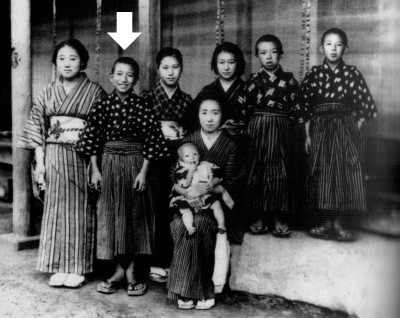
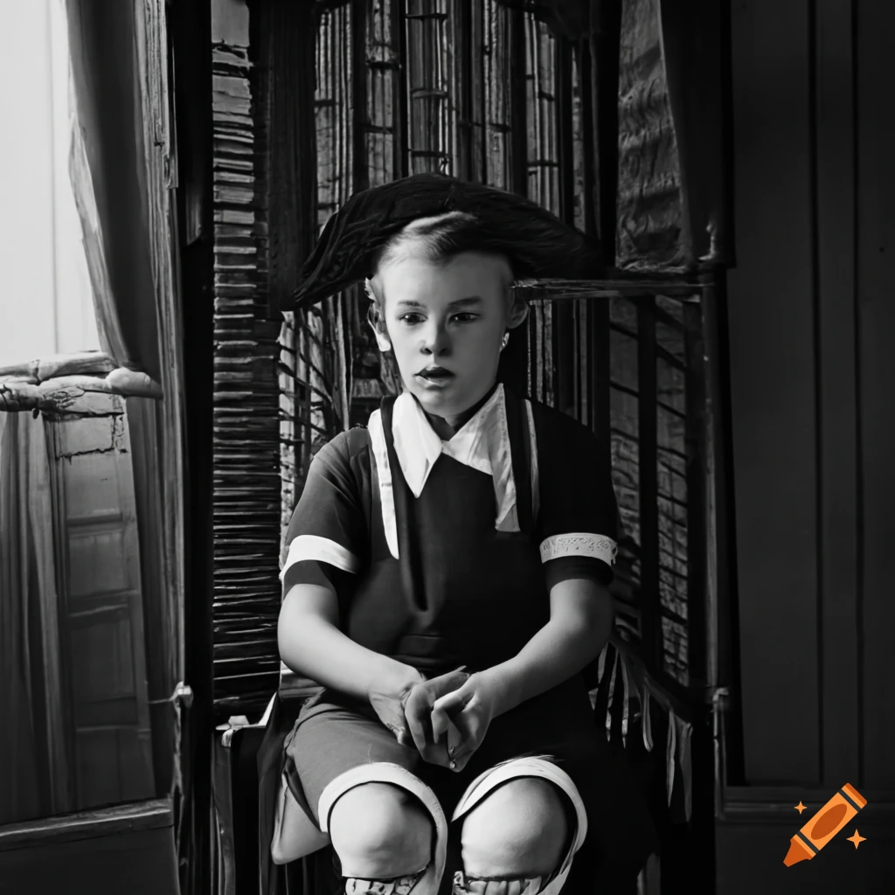
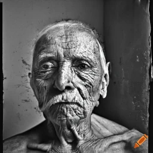

This is my final project for LJ251. It focuses on No Longer Human, A book by Osamu Dazai. I've chosen to do an image gallery of AI generated images (get it, No Longer Human?) using a couple of important lines and quotes from the book, to see what a machine could make of it. after each one, I will add a little comment of my own to briefly analyze it. Enjoy!
 I tried many times to get a generated picture that fit the description of the first prologue image, but none of them were accurate enough to satisfy me, instead, I did some digging and learned that the description of the picture was inspired by an image from Dazai's childhood, pictured here, with Dazai himself pointed out by the arrow. It's interesting to note how Dazai talks about the child in the story as "You see that it is actually not a smiling face at all. The boy has not a suggestion of a smile. Look at his tightly clenched fists if you want proof." Although in this photograph, Dazai doesn't have very tightly clenched fists the way it's described, there is certainly a hint of discomfort and forced happiness in his face, which lines up with the description of the novel as semi-autobiographical.
 Although the child in this picture is a little younger than I had originally imagined, I think it accurately captures the emotionless stare that was described in the second photograph of the prologue (but I'd imagine Dazai's original intention was for the man to be making eye contact with the camera). While most elements of the description were properly implemented, the "fake smile" is missing to give the characteristic eeriness to this picture.
 For the description of the third and last prologue image, every result I recieved usually had an elderly man similar to the one in this image, despite the description clearly mentioning that the man's age was indiscernable. I then tried to remove any words that may age the appearance of the product, but nothing changed. At this point it seems clear that Dazai's description of people relies more on the emotion that the subject conveys, which does not go well with an AI image generator. Other than that, the hands that are mentioned are also missing, and I don't think that an AI has the ability to create a face that is "genuinely chilling" in the way Dazai invisioned.
This will be where I talk about the second image mentioned in the prologue. The promped was [INSERT PROMPT HERE]
This will be where I talk about the first image mentioned in the prologue. The prompt was "a boy with a horrifying toothy grin surrounded by a great many women, most likely his sisters and cousins."
This will be where I talk about the second image mentioned in the prologue. The promped was [INSERT PROMPT HERE]
This website belongs to Yann Arif, and all art was procured by [insert]